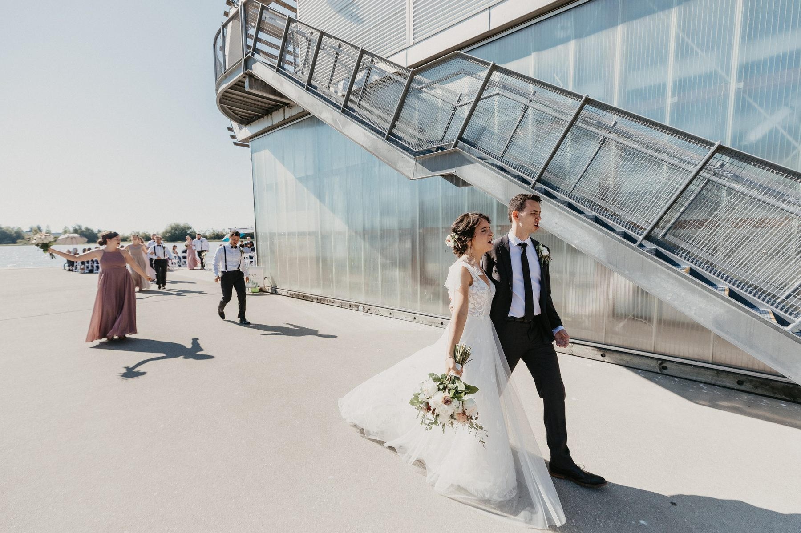
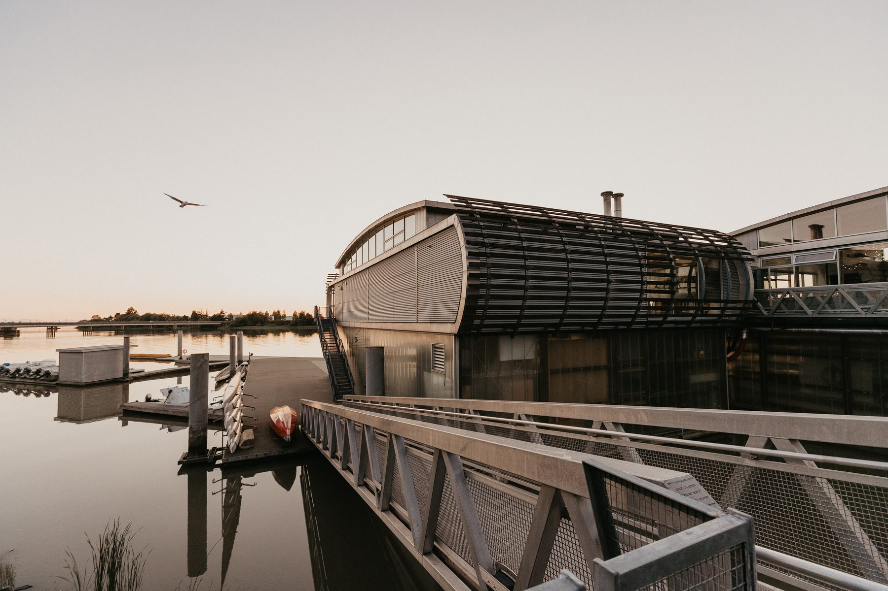
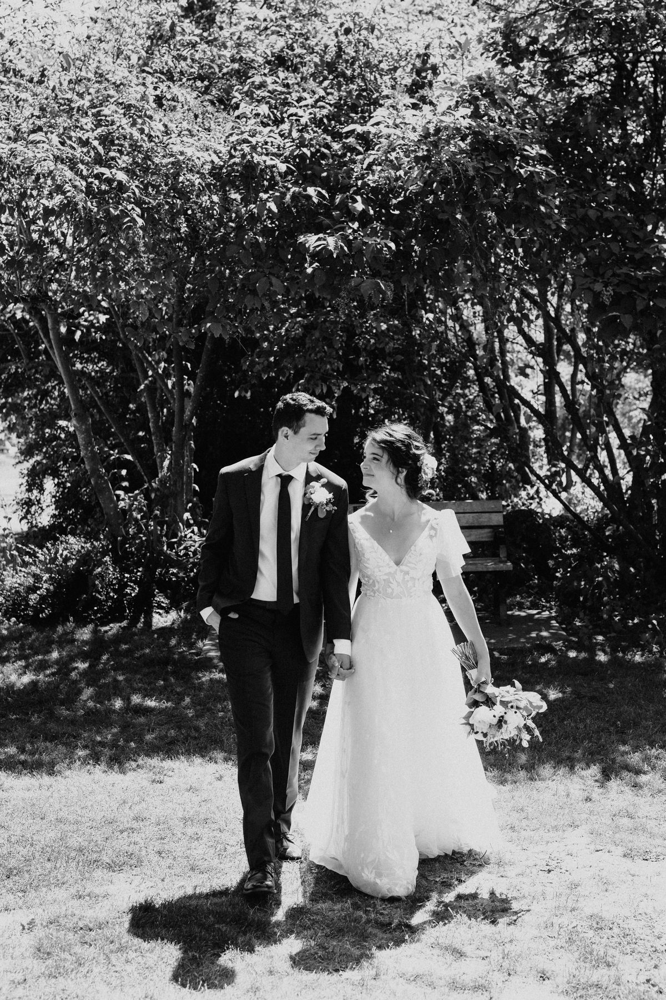
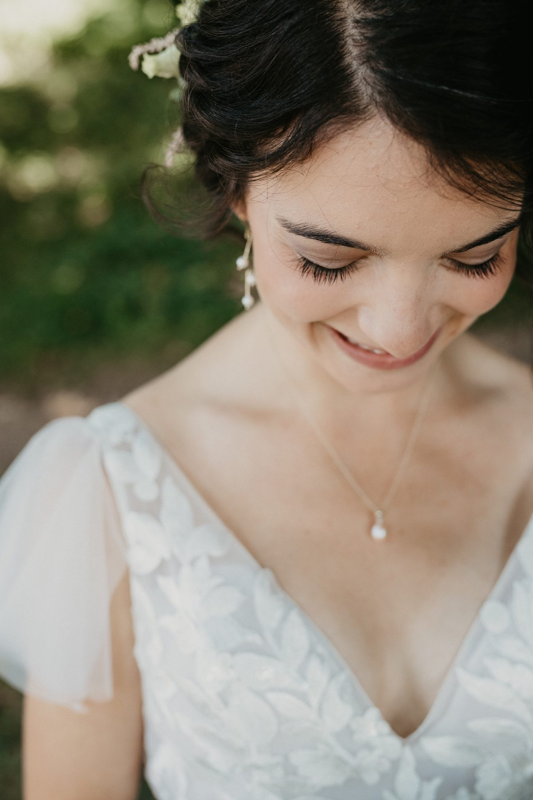
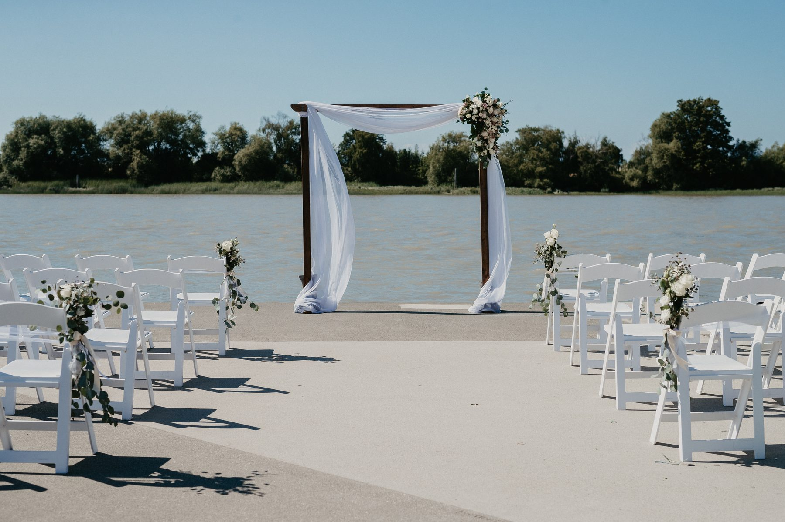
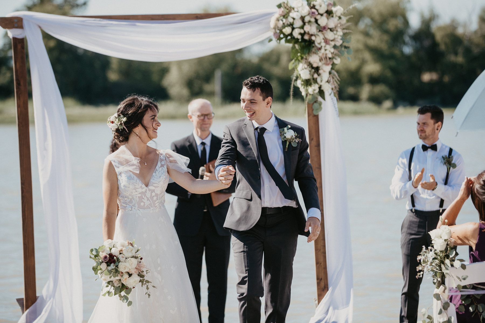
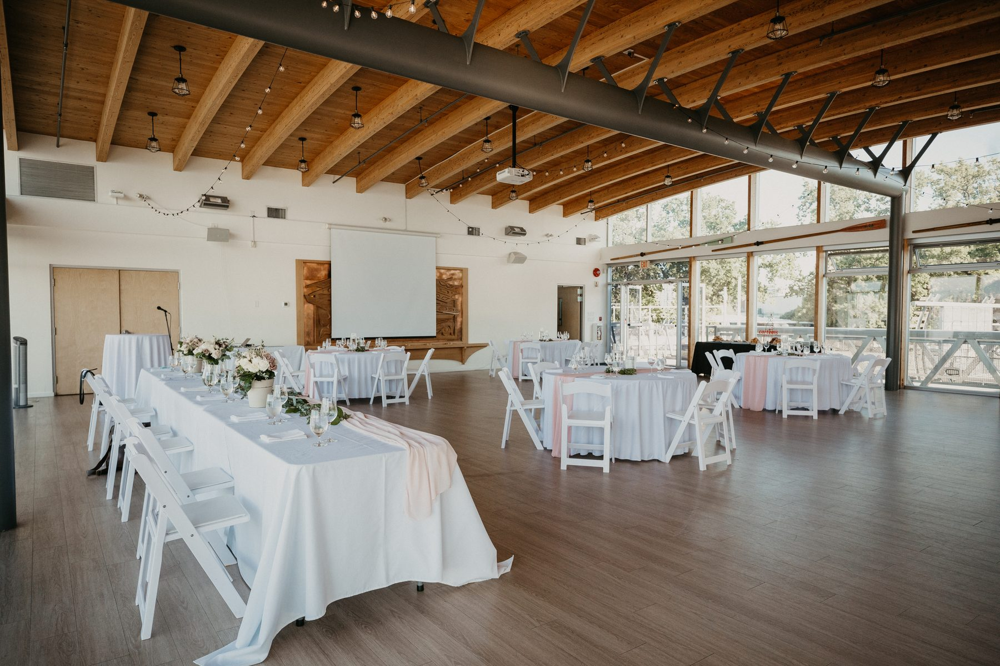
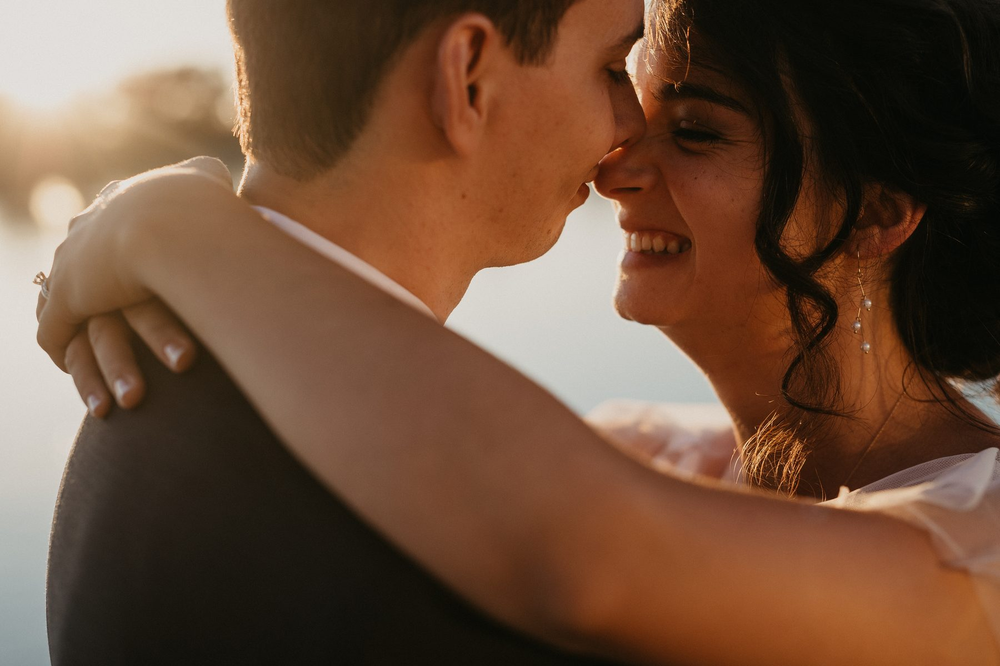
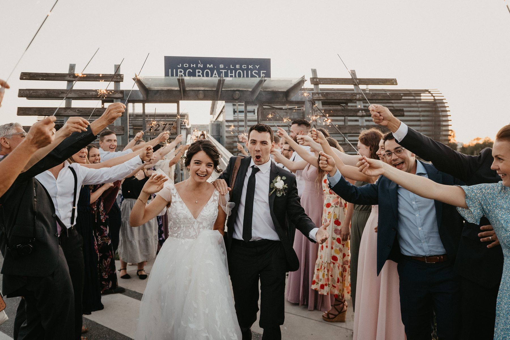

Every couple who books a Vancouver wedding asks me about rain.
Nobody asks me about sun.
Sarah and Josh got married at the UBC Boathouse in Richmond on the first weekend of July, on a rowing dock on the Fraser River, with no cloud in the sky and no shade anywhere near the ceremony. The weather was gorgeous. It was also the hardest thing about the day, and the fix cost about forty dollars.
The UBC Boathouse sits low on the Middle Arm of the Fraser, out past the airport approach where Richmond stops being strip malls and turns into water and dyke trail. Racing shells on the racks. A steel gangway down to floating docks. A barrel roof, glass on three sides, and a hall upstairs with exposed timber beams and a carved salmon frieze over the windows.

It does not look like a wedding venue. That is the whole appeal. There is no chandelier pretending to be Europe, no carpet chosen in 1998. It looks like a building that has a job, and the job happens to involve a spectacular view west down the river.
Their whole wedding party met us in the trees first, a good half hour up the trail from the water, deep in that heavy summer canopy that turns midday light into something you can actually work with.

The first look happened there. So did the bridesmaids in dusty rose, the groomsmen in suspenders and bow ties, and every portrait of Sarah in her gown.

Here is the practical version of that. On a July afternoon in the Lower Mainland the sun sits high and hard from about noon to five. On open water with a concrete apron under your feet, it comes at you twice, once from the sky and once off the ground. Faces squint. Whites blow out. Everyone looks tired in the photos because everyone is hot.
Trees fix it for free. Book your portrait block for the shade and your ceremony for the view. Do not try to get both out of the same hour.
They married outside on the apron between the boathouse and the water. Wooden arch, white chairs in two blocks, the river running flat and wide behind the officiant.

Half the guest list had umbrellas up. Not for rain. For shade.

Somebody in that family thought about it in advance and put a stack of umbrellas at the back of the aisle, and it saved the ceremony. Grandparents stayed. Nobody drifted to the wall for shade. The blue in those umbrellas even bounced a bit of cool light back onto the front row, which I did not ask for and will happily take.
If you are having an outdoor summer ceremony with no tree cover, the shopping list is short. Umbrellas. Water on every chair. A ceremony that runs twenty minutes, not forty. Do those three things and your uncle will still be smiling in the recessional.
The reception hall runs the length of the building with glass down one side, so the river is in the room the entire evening.

Long speeches. Real ones. A dad who lost it a bit, a maid of honour who did not, and a best man who read from a napkin. Sarah and Josh sat behind a head table with the water going gold behind their shoulders for the entire second half of dinner.
There was no cake. There were trays of donuts, which cost a fraction of what a tiered cake costs and got eaten twice as fast. I am not going to pretend that is a photography opinion. I am telling you because the cutting of a cake is four minutes of your day and nobody has ever booked me because of it.
We pulled them out for fifteen minutes around nine.

The river went completely still, the sun dropped into the flats past the far bank, and the light came in sideways at about six inches off the deck. It is the softest, warmest light of the entire day and it lasts about twenty minutes.
This is the argument for a waterfront venue that faces west, and it is a better argument than the view is. A view is a backdrop. West facing water is a light source.
Put fifteen minutes in your timeline for it. Tell your coordinator you are stepping out. Nobody at the party will notice you are gone, and you will get the frames you actually print.

Yes, if you know what you are buying.
Take it if you want water, big open sky, a room with real character in the beams, and a venue twenty minutes from the airport for out of town guests. Take it if you like the idea of a building that looks like the coast instead of a hotel.
Think twice if your ceremony is at two in the afternoon in July with no shade plan. Think twice if you need the reception and the ceremony to be in the same climate controlled room. Waterfront in Richmond means wind some days and full sun on others, and both of those are your problem to solve, not the venue's.
Sarah and Josh solved it with trees, umbrellas and a timeline. That is the entire trick, and it is available to anybody.
SimplyWed Studio is a Vancouver wedding and elopement photography studio. Send us your date through the contact page and we will build a shade and light plan into your timeline before you lock the ceremony time.
← Back to the journal